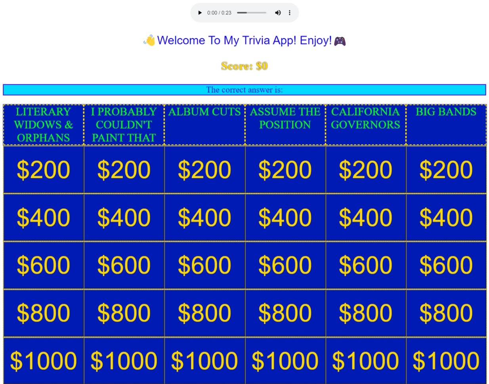
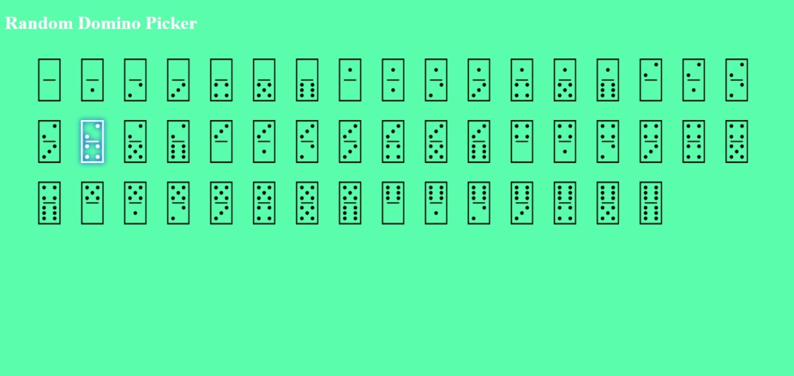
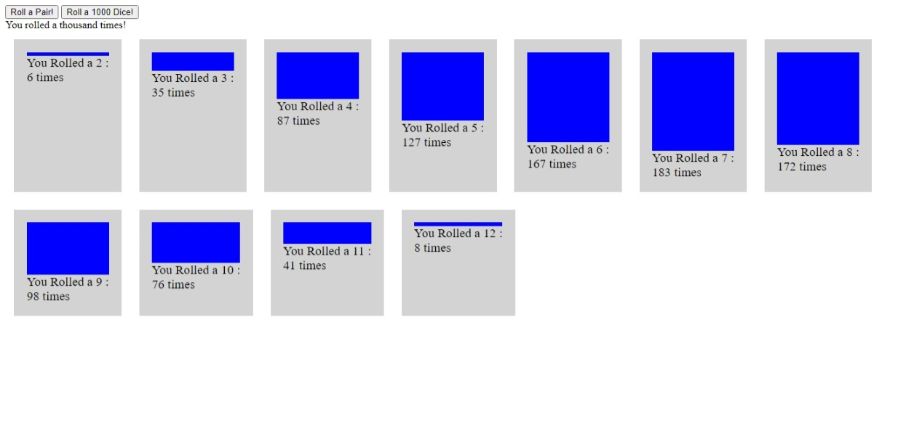

John O'Brien II
🚀 Welcome to my website!
Coding isn't just a career, it's a lifestyle!
About Me
I've been married to my amazing wife, Lela, for two years, who has helped me push through to accomplish my dreams. I like building web applications and websites, as well as, coding in general. I have three dogs that love me and make me happy. I'm very hard-working and I'm a fast learner. I like to play video games in my free time. I like coding because I've wanted to learn more about computers and I like looking at something that I'm proud of developing. I'm a huge fan of the tv shows: Family Guy , American Dad , and King of the Hill to name a few. I'm also a big fan of Sci-Fi, Action, and Comedy movies. I just graduated from Kenzie Academy in November of 2021. I am always broadening my knowledge of other programming languages and using libraries of the languages I already know.
🔭 Projects
Jeopardy-Style
Trivia
Game

Random
Domino
Picker

Dice
Roller
App

You might not think that programmers are artists, but programming is an extremely creative profession. It's logic-based creativity.
- John Romero
📝 Work History
Amazon, December 2019 - Present
Order Picking
- Grabbed items and put them in a cage attached to the back of my machine, in order to meet the customers’ demands. Dropped the cage off in pack in order for it to be packaged for the customer to receive.
- Resulting in happy customers’ getting their ordered items on time.
Customer Returns
- Examined returned items in order to determine whether or not Amazon could resell them. Processed the unsellable items and put them in boxes.
- Resulting in Customers’ not getting clothing that looks obviously worn and the company not losing money.
Two Men And A Truck, January 2019 - December 2019
Professional Mover
- Moved furniture and totes out of a customer’s old house and set the customer’s items back into the new house. Maneuvered furniture down tight hallways and corners in order to prevent damages.
- Resulting in happy customers’ getting their items moved (most of the time) in their new home on the time they were estimated over the phone with no damages done to their house or furniture. Whenever it wasn’t within the estimated move time, either something out of our control, customer adds on items not originally on the job sheet, or a piece of furniture that required extra work (I.E. couch/ table legs needed to come off, etc).
Area Wide Protective, September 2018 - December 2018
- Held oncoming traffic, in order to allow traffic coming from the other end of the construction zone. Then allowed my traffic through the construction zone
- Resulting in safe drivers and employees, employees getting the job done that needs to get done.
Thanks for visiting!
Contact Me!